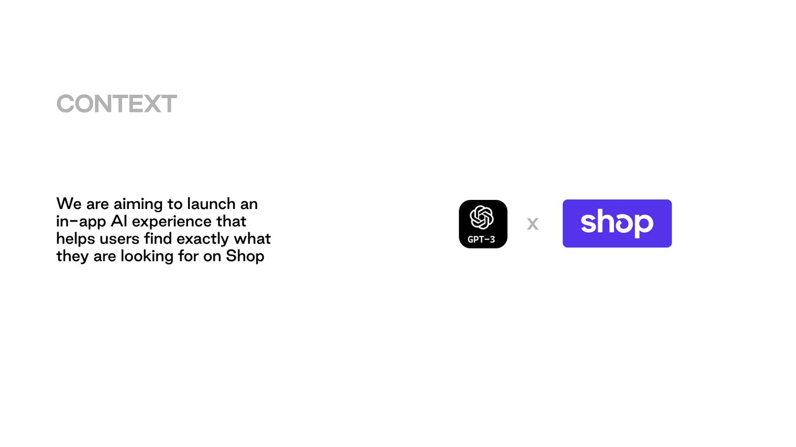
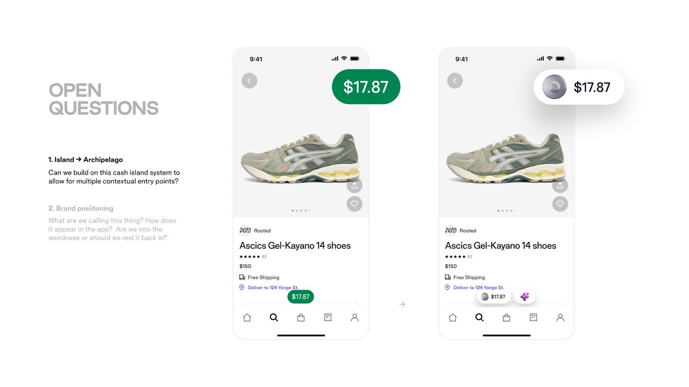
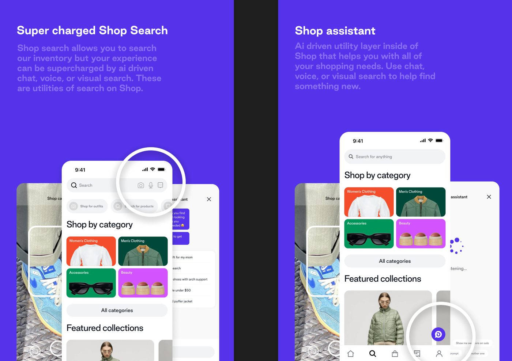
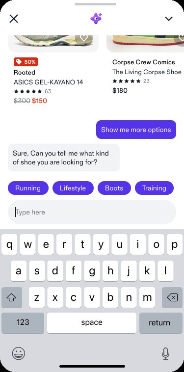
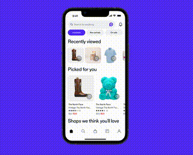
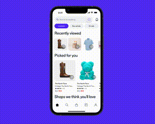
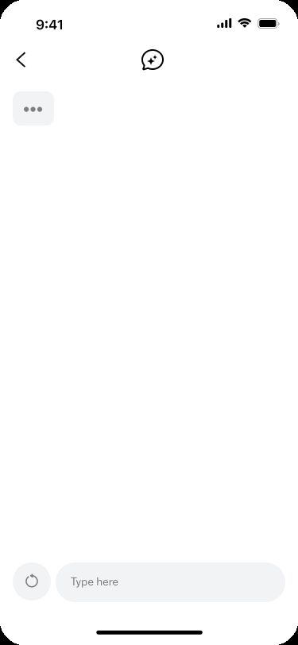
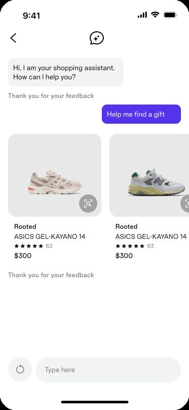
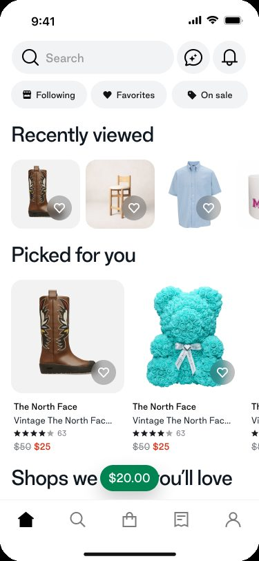

Shop Assistant
Prompt engineering and content standards for an AI shopping assistant inside the Shop app, one of the first four public ChatGPT API implementations, shipped to 100 million users.
The problem space
Shop's search was pure inventory lookup: type a query, get a results grid. Someone typing "a gift for my mom" got a wall of products back and no help narrowing it down. The team wanted to test whether a conversational AI layer, built on GPT-3.5 about a week after OpenAI opened up the ChatGPT API, could actually understand what someone needed, beyond matching the words in their query.
OpenAI had opened the API about a week earlier, and nobody on the team yet knew whether Shopify would ship alongside that launch or months behind it. It was a 0-to-1 build under real time pressure, with real open questions nobody had answered yet: how do we train a model to hold the brand's tone, how do we even categorize and prioritize the prompts people might type, what happens when the conversation goes back and forth, where should this even live in the app.
Keyword search can't read intent, it can only match words. Someone asking for "an outfit for a summer wedding" needed judgment, not a smarter filter, and nobody at Shopify had designed content for a model like this before.
Help a shopper find the right thing through real conversation, without losing the app's voice. Not a chattier results grid wearing a chat bubble.


The rest is behind a password
The process, the outcomes, and what I learned along the way. Reach out and I'll send it over.
What I worked on
Defined what the assistant actually was before anyone touched a screen, in one plain sentence the rest of the team could build toward. "An AI-driven utility layer inside Shop that helps you with all of your shopping needs, chat, voice, or visual search," positioned alongside a supercharged Shop search with camera, voice, and chat docked right in the search bar. Naming the thing first meant design, engineering, and product were all building toward the same idea from day one.

Designed the prompts behind the assistant's conversations, past the concept stage, grounded in Shop's real product taxonomy and tone of voice spectrum. The assistant narrowing "the 45,873 shorts we have available on Shop" down through one specific opening question and quick-reply chips, the same pattern behind asking what kind of shoe someone wanted: Running, Lifestyle, Boots, Training. Those chips weren't invented: they mapped to categories that already existed in Shop's taxonomy, so a real part of my job, with engineering support, was training the assistant on that taxonomy well enough to surface the right one depending on where the conversation had gone.
Every line also had to hold up against the tone of voice spectrum I built for Gravity, Shop's design system, so the assistant sounded like Shop even while reasoning out loud.

Designed the context the model operated inside, working through open questions as they came up, not after the model already existed. None of these were separate decisions. Tone shaped which prompts mattered, prompts shaped how a conversation needed to recover, and all of it fed into what counted as a good response, worked out together instead of one after another:
- Training the model on Shop's tone of voice, the same spectrum already established through Gravity
- Building a list of what a first-time user might actually type, pulled from Shop's real search data, then deciding which of those the assistant needed to handle well at launch and which could wait
- Deciding how back-and-forth should work, where the entry points should live, and how each turn recovered when a request came back empty or off track
- Defining what a good response looked like, work that later shaped the actual evaluation rubric
Evaluated output quality by hand, because automated evaluation wasn't standard practice yet in early 2023. Human review against a rubric, spot-checking whether a response surfaced a product that actually fit the ask, stayed grounded in real inventory and price, held Gravity's tone, and asked a clarifying question instead of guessing. That hands-on review was the standard before LLM-as-judge evaluation became common.
Built two end-to-end demos that show the assistant reasoning through a request instead of just matching it to a product. Asked for "a gift for my mom," it reasons about the occasion and her style before recommending a hat and boots. Asked for "an outfit Brad Pitt would wear," it explains the styling choices behind the look. Both demos make the same point: the assistant thinks through a request before it recommends anything.


Co-designed the chat interaction's full state model, from the obvious to the easy-to-forget. Mapped every state the chat interaction could be in, from an empty first screen through feedback captured to a fully cleared conversation. Each one got the same scrutiny, including the states nobody notices: what nothing-typed-yet looks like, what a cleared thread looks like.


Placed the entry point across three real product surfaces: Home, browse-by-category, and search results. The same small purple icon sat in the search bar on all three, so the assistant read as one consistent, always-available option across the whole app.

What got shipped
Built and shipped fast enough to land inside OpenAI's own launch window for the ChatGPT API. OpenAI named Shopify directly alongside Instacart, Snap, and Quizlet as one of four launch partners, the same day the API itself went live. That's the direct payoff of scoping this during the week the API became available, long before most companies even had access.
Shipped to 100 million Shop app users is the number that matters here. It launched publicly on March 1, 2023, via a purple assistant icon in the search bar, with a web rollout two weeks later and independent press coverage at launch. It's still live today, built into Shop's core experience. For the record, this 2023 assistant is a distinct, earlier product from Shopify's later merchant-facing Sidekick and the 2025 checkout integration, it predates both.
Shop's own launch tweet had the voice baked right in. "Say hello to your new shopping BFF: the @Shop app's ChatGPT powered assistant is ready to talk products, trends, and maybe even the meaning of life." The same tone spectrum carried into the brand's own words, too.
The lesson learned
-
Writing for a model I couldn't fully control changed what the job actually was.
In the first days the API existed, I couldn't just specify an output and expect it. I could only shape the conditions the model worked inside: train its tone, hand it real product data, define what a good answer looked like, and see if the behavior held.
That reframed the job for me. Less time writing the answer myself, more time designing the context and guardrails the model answers inside. If I started this project today, I'd begin from the content standards instead of the demo. The instinct held up even with week-old tools, I just had the order backward.
-
Tone, prompts, and evaluation weren't problems I could solve in order.
I expected to nail down tone first, then write the prompts, then figure out evaluation last, a tidy sequence. It didn't work that way. Deciding how blunt or playful the assistant could be changed which prompts were even worth building for, and watching how those prompts actually performed changed what counted as a good response in the first place.
Now on any ambiguous AI project, I expect earlier decisions to get revisited once later ones are in front of me, rather than moving down a list once.
-
Human review against a rubric was the right call in 2023, but it doesn't scale.
Every prompt change meant re-reviewing outputs by hand against the rubric: did the response surface something that actually fit, stay grounded in real inventory, hold the brand's tone. The cost of one review stayed the same, but the number of reviews only grew as the prompts kept changing, and that's exactly where manual review breaks down. LLM-as-judge evaluation, where another model scores outputs against that same rubric, wasn't standard practice yet to lean on instead.
Now I'd keep the same rubric but hand the scoring to an LLM-as-judge: run a fixed set of real shopper queries through it on every iteration, so quality becomes a number I can track automatically, no matter how often the prompts change.
There's always more behind a case study.